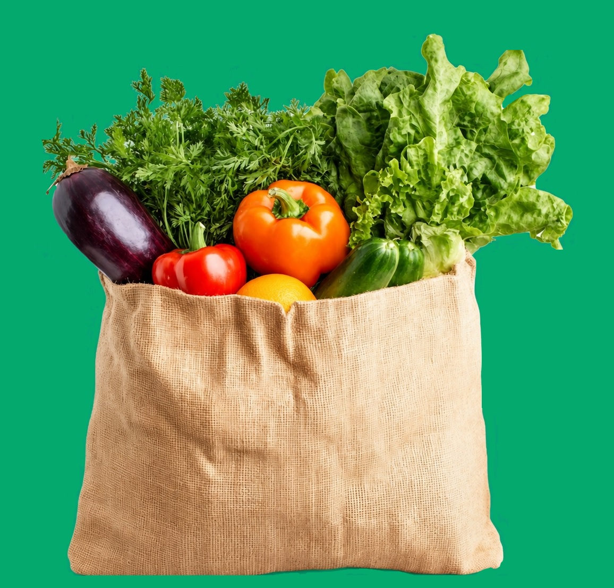

🛒 Når du handler 🛒
- Altid tjek køleskabet inden du handler - ofte har man mere end man tror
- Lav en indkøbsliste: Skriv hjemmefra præcis det, du mangler, og hold dig strengt til listen.
- Køb kun det, du har brug for, undgå uoverskuelige tilbud: Fald ikke for "køb tre for to"-tilbud, medmindre du rent faktisk kan nå at bruge det hele.
- Køb varer der nærmer sig udløbsdato
- Brug kurv i stedet for vogn: En lille indkøbskurv begrænser fysisk, hvor meget du kan tage med dig.
- Gå aldrig sulten af sted: En tom mave gør, at du køber flere uforudsete ting og fristelser.
